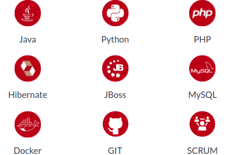

Wszystko, co widzisz korzystając z aplikacji internetowych, to kombinacja języków HTML, CSS i
JavaScript, obsługiwanych przez Twoją przeglądarkę internetową. Zawierają się w nich czcionki, rozwijane
menu, slidery, formularze kontaktowe, przejścia między elementami strony, obiekty interaktywne oraz
wszystkie szczegóły, które sprawiają, że aplikacja Ci się podoba :)
Po naszym kursie zdobędziesz wiedzę i umiejętności, potrzebne do stworzenia efektywnej i nowoczesnej
aplikacji webowej.
Największe wyzwania programistyczne kryją się na serwerach, które obsługują wszystkie duże systemy informatyczne. Równie ważne, co samo przetwarzanie dużej ilości danych jest ich bezpieczeństwo oraz możliwość obsługi milionów użytkowników jednocześnie. Paleta najczęściej używanych technologii back-endowych jest bardzo szeroka, ale do najpopularniejszych należą Java, PHP czy Python. Każda z nich ma swoją specyfikę, ekosystem i zastosowania, ale łączy je jedno - każdej z nich możesz nauczyć się dzięki naszym kursom.
W ciągu 8 tygodni kursu dziennego lub 20 (12-godzinnych) weekendów kursu zaocznego w inspirującej atmosferze będziesz mógł się przygotowywać do zawodu programisty.
Przygotujemy Cię do wejścia na rynek pracy w IT - wesprzemy w przygotowaniu CV, profilu na LinkedIN i GitHub. Doradzimy, jak przygotować się do rozmów rekrutacyjnych i jak nawiązywać współpracę z firmami IT.
Poznasz w praktyce nowoczesne języki, techniki i narzędzia programistyczne. Nauczysz się pracy w zespole projektowym. Zbudujesz portfolio projektów, które staną się Twoją wizytówką u przyszłego pracodawcy.
Po tym, jak skontaktujesz się z nami, przedstawimy Ci warunki uczestnictwa w Akademii. Proces rekrutacji składa się z rozmowy informacyjnej oraz testu wskazującego poziom zdolności analitycznych i aktualny poziom kompetencji technicznych.
Każdy dwumiesięczny kurs dzienny kończy uroczysty Hackers Day, który jest doskonałym momentem na sprawdzenie zdobytych umiejętności oraz na zaprezentowanie się przed pracodawcami.